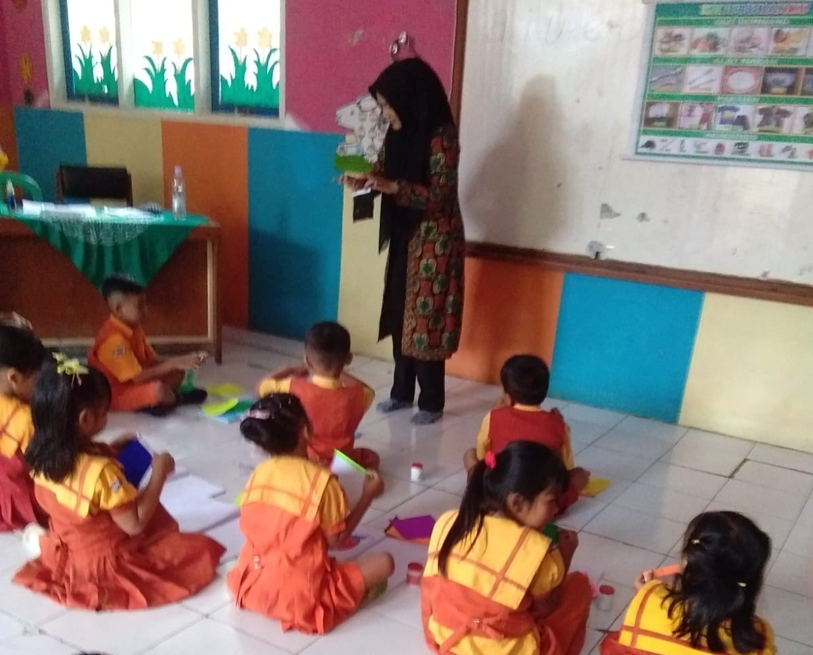
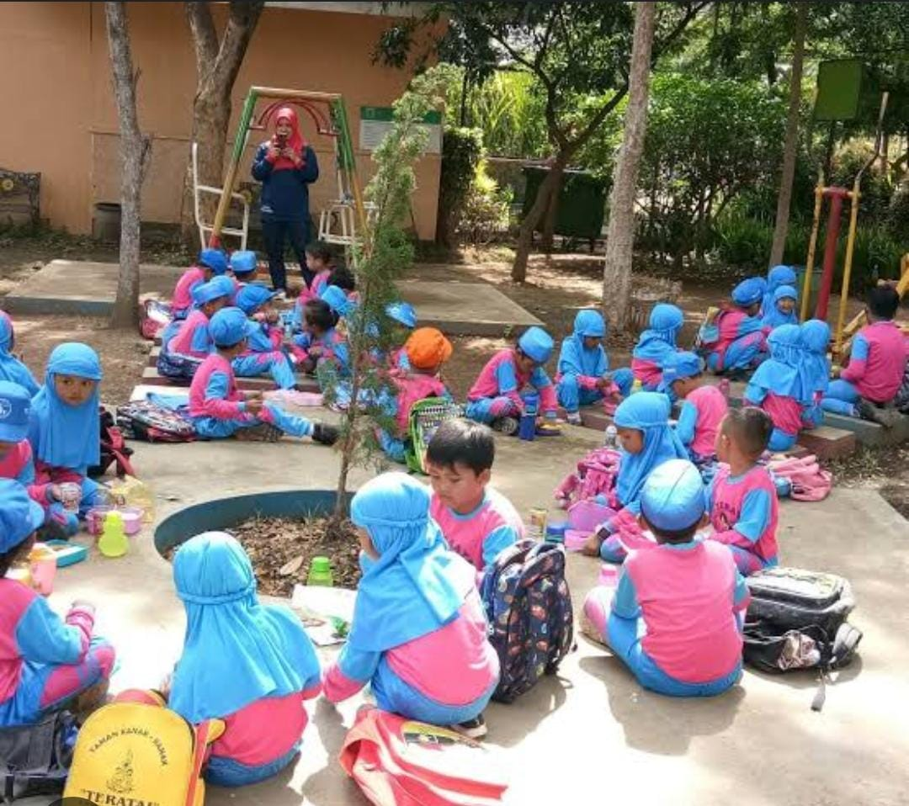

Tumbuh Bersama Seperti Teratai

Taman Kanak-Kanak Teratai adalah sekolah prasekolah yang menawarkan pendidikan berkualitas bagi anak-anak
usia dini.
Dengan pendekatan holistik, lingkungan belajar yang aman, dan guru yang berdedikasi,
sekolah ini
membantu anak-anak berkembang secara optimal melalui kegiatan kreatif dan menyenangkan

Membimbing anak untuk bisa memiliki perilaku hidup sehat; Membimbing anak untuk menjadi pribadi yang mandiri; Melibatkan anak dalam berbagai kegiatan yang mengasah kreatifitas anak; Membimbing anak untuk memiliki akhlak mulia.
TK Teratai memperkenalkan program pembelajaran baru dengan pendekatan interaktif. Dengan menggunakan teknologi canggih, anak-anak dapat menggali pengetahuan secara lebih menyenangkan. Orang tua dan guru menyambut positif langkah ini yang diharapkan meningkatkan minat belajar dan kreativitas.
Prestasi membanggakan datang dari TK Teratai yang baru saja meraih penghargaan sebagai sekolah prasekolah terbaik. Keberhasilan ini mencerminkan dedikasi guru dan pendekatan pembelajaran yang unggul, menjadikan TK Teratai sebagai teladan dalam memberikan pendidikan berkualitas.
TK Teratai tidak hanya fokus pada pendidikan, tetapi juga aktif dalam kegiatan sosial. Anak-anak diajak berpartisipasi dalam berbagai kegiatan amal, memupuk nilai-nilai empati dan kepedulian. Inisiatif ini memperkuat ikatan sosial di antara siswa dan memberikan dampak positif pada masyarakat sekitar.